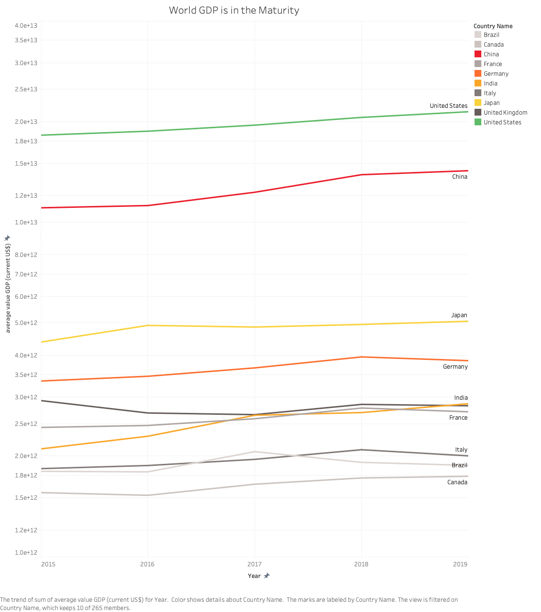
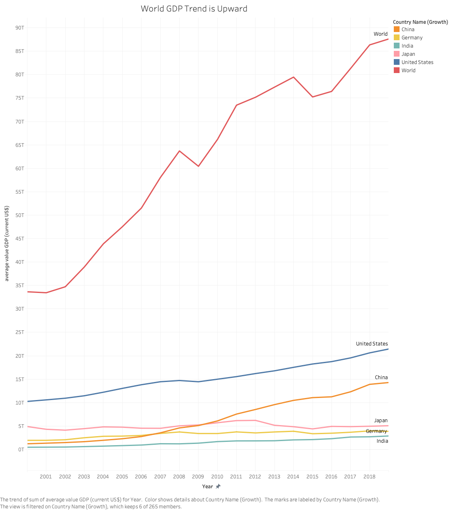

Proposition: The Overall World Economy is in the Phase of Maturity
FOR the Proposition

Design Decisions and Rationale:
- [Deceptive or earnest: 1] Use dark/cold theme of color to emphasize the calmness of the mature economy phase, including its title.
- [Deceptive or earnest: -1] Horizontal axis is narrowed down to 2015 to 2019, clipping a limited range of year
- [Deceptive or earnest: -2] Log scale on the vertical axis is adopted to less emphasize the magnitude of difference over years
- [Deceptive or earnest: 0.5] Up to top 10 countries are shown in the visualization to emphasize the trend is stable
The muted, cool color palette (blues, grays, soft pinks) creates a visual atmosphere of stability and calmness that reinforces the opinion of "maturity" rather than dynamic growth. This color choice works subconsciously to make viewers associate the data trends. We did not put 2 since the color choice can be felt very intentional. Alternative approaches would be using black/white (which felt too stark but still neutral), but the cool palette best supported the maturity narrative.
By creating the narrower time range, the visualization makes audience feel the growth curves stable. This selective time framing is deceptive because it excludes historical context that might show more volatile periods or rapid growth phases, which would contradict the "maturity" claim. A longer time series (e.g., 1990-2019) would reveal more dramatic growth trajectories, particularly for China. This 5-year window was the most effective at making the economy appear to have entered a steady, mature phase with minimal volatility.
The logarithmic scale is the most deceptive choice here, as it compresses visual differences in growth rates and makes exponential growth appear linear and gradual. Although log scales are technically valid for comparing proportional changes, they make the audience feel the absolute magnitude of economic expansion—China's GDP growth of several trillion dollars appears as modest as smaller economies' growth of hundreds of billionstheir first glance. This scale makes all countries' trajectories look similarly "mature" and stable. We initially considered a linear scale, but we adopted a log scale because a linear scale would show upward trends, especially for the US and China, which would counter the maturity argument. The log scale was used to visually flatten growth and support the proposition.
Using a relatively large number of countries, the visualization places less emphasis on growing nations (e.g., the United States, China) than with a smaller number of nations. This selection emphasizes stability by cherry-picking countries already in "mature" phases of development with a decent claim (i.e., top 10 GDP countries). However, this decision is closer to neutral because it's also a reasonable editorial choice for clarity—showing too many countries would create visual clutter. The mild deception lies in excluding emerging markets with higher growth rates (like Vietnam or Bangladesh) that would suggest the global economy still has high-growth regions. Alternatives included showing the G7 countries, OECD members, etc.
AGAINST the Proposition

Design Decisions and Rationale:
- [Deceptive or earnest: 1] Vibrant color is used to draw attention to the data and make it more visually striking as well as the title.
- [Deceptive or earnest: 2] Year range is extended to 1956 to 2019 to show a broader historical context, showing histrical growth of the economy.
- [Deceptive or earnest: 2] Linear scale on the vertical axis is adopted to show the actual magnitude of difference over years.
- [Deceptive or earnest: 2] World economy is shown in a global context, indicating worldwide economic trends continues to grow.
- [Deceptive or earnest: -0.5] Top 5 countries are selected to show the most significant contributors to global economic growth.
The red color for the "World" aggregate line, combined with the bold red title "World GDP Trend is Upward," creates a big visual impact that conveys a main message of growth, which is the opposite of calm maturity. Red is psychologically associated with energy, which primes viewers to interpret the data as showing an active, growing economy. This is largely earnest because this entire color usage is not felt artificial, but natural. However, there's a slight deceptive element in how the color choice emotionally frames the interpretation. The prominence of the red world line also draws the eye immediately, making it the focal point of the visualization.
Extending the timeline to over 60 years is a highly earnest decision because it provides comprehensive historical context and demonstrates the long-term exponential growth trajectory of the global economy without hiding anything compared to the other one. This extended view reveals that the dramatic upward curve continues through 2019, with no signs of maturity. The longer timeframe also captures major economic transitions— industrialization, globalization, and the rise of emerging markets—all of which show sustained growth rather than stabilization. We initially made a visualization of shorter but still longer time frame (e.g., 2000-2019) than the other one (i.e., 2015-2019), but we adopted the entire time frame because the initial one wouldn't adequately show the accelerating growth pattern. The 60+ year view is the most honest representation of long-term trends and effectively demonstrates that growth has been persistent and accelerating, not slowing into maturity.
The linear scale is a fully earnest and conventional choice that accurately represents the absolute magnitude of economic growth. Unlike the logarithmic scale used in the FOR visualization, the linear scale reveals the dramatic acceleration in global GDP—the steep upward curve, especially from 2000 onward, visually demonstrates explosive growth rather than mature stability. This scale choice is transparent and shows the actual trends of the growth. The dramatic visual curve successfully indicates that recent years have seen far larger absolute increases in GDP than earlier years. We did not adopt alternative scales (e.g., logarithmic) because they would compress this dramatic growth pattern. The linear scale effectively communicates that the world economy is adding increasingly large absolute amounts of wealth each year, which contradicts the notion of maturity.
Adding the "World" aggregate line (shown in red) is an earnest decision that provides the most comprehensive view of the global economic trend. This aggregation demonstrates that even if some individual countries show stable growth, the overall global economy continues to grow. The world total provides a complete picture rather than a selective one. This design choice is highly transparent and informative—it prevents cherry-picking of specific countries and shows the full scope of global economic expansion. The visual dominance of the world line emphasizes that this aggregate measure is the most important for evaluating the proposition about the "world economy."
Selecting only the top 5 countries (the United States, China, Japan, Germany, and India) is a slightly deceptive choice because it can feel like it's a small number of countries, and some audience might feel they are arbitrarily picked, but this decision is closer to neutral because selecting the top 5 GDP countries is a decent claim, and showing too many lines would create visual clutter. Thanks to the small number, we can see that the United States and China stand out in their economic growth clearly, leading to the growth appreciation. Alternatives could be showing all the top 10 countries and highlighting only the prominent growing countries, but we did not adopt it since it would provide overwhelming information for the audience and divert from where we want the audience to focus. The top 5 provides clarity while maximizing the visual impact of the growth story.
Final Reflection
Certain aspects of this design process were intuitive—selecting color themes, for instance, came naturally, as the associations between vibrant red and energy versus cool tones and calmness are deeply ingrained in visual culture. What surprised me most was the strong persuasive potential of technical choices at first hand: scaling (logarithmic vs. linear) and temporal range selection (1956-2019 vs. 2015-2019). These decisions can easily change how a visualization appears for audiences and, as a result, how they interpret the data. By grappling with this assignment, I learn that a logarithmic scale can make exponential growth appear stable and can put less emphasis on it depending on the audience, while a linear scale shows its rapid growth. Also, cropping the time axis to recent years can hide long-term trends that would counter an intended proposition. The process of creating a visualization from two sides has made me acutely aware of the dual aspect of these techniques—they are essential analytical tools, but they also carry significant potential for deception if applied with malicious intent. Defining appropriate scales to endorse/object to a proposition was challenging for me because it requires a comprehensive understanding of the data's full range and trends, reconfirming the importance of exploratory data analysis and design sketch before making any design with a visualization tool.
As this assignment indicates, there is rarely a clear boundary between deceptive and earnest design choices. Also, this determination depends on people's views. In my view, ethical analysis and visualization are essentially defined by the author's neutrality and intention. While I think all forms of representation always carry some bias and perspective, the critical difference is whether the representation can be naturally and consistently interpreted by diverse audiences. Acceptable persuasive choices present data in a clear and concise manner, enabling audiences from different backgrounds and cultures to have consistent interpretations. On the other hand, misleading visualizations deliberately bend neutrality and universality, prioritizing one interpretation while obscuring alternatives. As a result, it leads to benefiting one perspective at the expense of others.